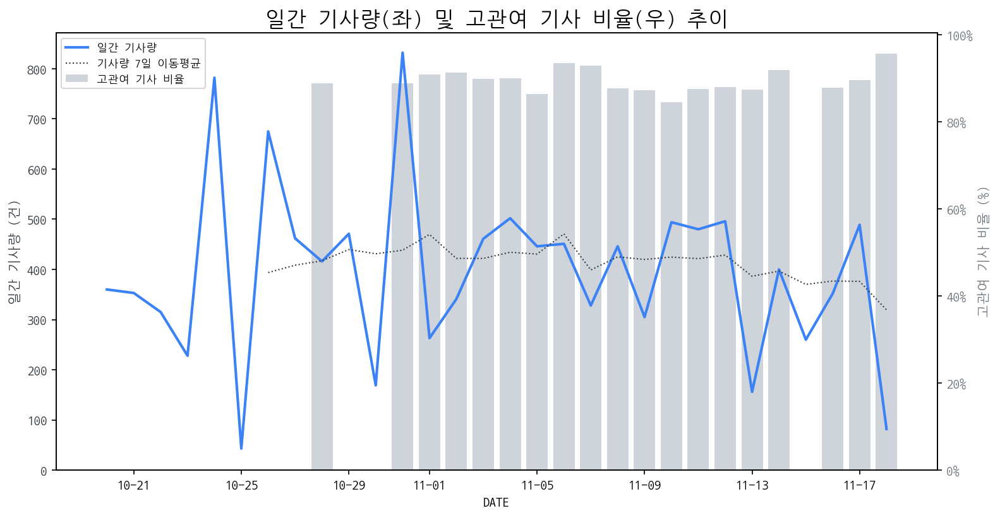

1
시장 활동 지표
기사량 추세 & 이상 징후 탐지
시장의 '전체 기사량'이 평소보다 비정상적으로 급증했는지(Spike)를 차트로 확인하고, LLM이 분석한 급등의 핵심 원인을 파악할 수 있음

고관여 기사란? 산업 연관 키워드로 수집된 기사들 중 디스플레이 키워드에 가중치를 반영하여 도출된 관련성 높은 기사
수집된 기사 수 (2025-11-18)
82
-83% WoW
기사량 변동 수준 (7일 이동평균 대비)
±6.7% 이하
2
오늘의 키워드
급격한 관심 ↑, 주목해야 할 키워드
금일 유의미한 급등 신호는 포착되지 않았습니다.
3
실시간 Risk 키워드
경계해야 할 시그널 탐지
특정 토픽의 부정 감성 점수가 급등할 때 이를 즉시 탐지하고, "근거 기사" 링크를 통해 리스크의 실체를 빠르게 파악할 수 있음
!
**AI 로봇 기술 사업 기업**
하락폭: 0.50
- AI 로봇 기술 사업 기업의 감성 점수 급락은 디스플레이 제조 기업에게 잠재적인 수요 위축 및 투자 매력도 감소를 시사합니다. 주요 기사에서 AI 로봇 스타트업 시장 육성, 로봇 관련주 상승, AI 및 전력 신기술 집약 행사 등의 긍정적 소식이 있지만, 이러한 기술 발전이 직접적으로 디스플레이 수요 증가로 이어지기보다는, 디스플레이 제조 기업이 AI 로봇 분야에 직접 투자하거나 협력할 기회가 제한적일 수 있습니다. 또한, AI 노트북에서의 티셔츠 제작이나 농업 조명과 같이 디스플레이와 직접적인 연관성이 적은 AI 응용 분야의 부각은 디스플레이 산업 자체의 기술적 혁신이나 시장 확대에 대한 기대감을 희석시킬 수 있습니다. 이는 디스플레이 제조 기업의 신규 투자 결정이나 기존 사업 전략 수립에 부정적인 영향을 미칠 수 있습니다.
- AI 로봇 기술의 발전 속도 및 방향성 불확실성은 디스플레이 제조 기업의 장기적인 성장 전략 수립에 부담으로 작용할 수 있습니다. '한일 공동 AI 스타트업 시장' 조성과 같은 내용은 새로운 경쟁 환경의 도래를 의미하며, 디스플레이 제조 기업은 이러한 변화에 대응하기 위한 기술 개발 및 사업 모델 재편에 대한 압박을 느낄 수 있습니다. 현재 기사들은 AI 로봇 기술이 다양한 산업에 적용될 가능성을 보여주고 있지만, 디스플레이 패널의 핵심 수요처로서 AI 로봇 산업의 명확한 비전 제시가 부족합니다. 이는 디스플레이 제조 기업이 AI 로봇 산업의 성장 잠재력을 어떻게 흡수하고 활용할지에 대한 구체적인 전략을 세우기 어렵게 만들며, 불확실성 증대로 인해 잠재적인 투자 지연 또는 사업 포트폴리오 재조정의 필요성을 제기할 수 있습니다.
Current Status
오늘 점수: 0.50, 7일 평균: 1.00
Key Evidence Article (Most Negative)
!
**빌트인 가전 시장 트렌드 분석**
하락폭: 0.19
- 급락 원인: LG전자의 미국 초프리미엄 빌트인 가전 시장 집중 공략 소식으로, 동종 업계 내 경쟁 심화 및 디스플레이 기술 경쟁으로 인한 비용 상승 부담 가중 가능성에 대한 시장의 경계감이 반영된 것으로 분석됩니다. 특히, 초프리미엄 전략은 높은 기술력과 디자인을 요구하며, 이는 디스플레이 패널의 성능 향상 및 원가 경쟁력 확보에 대한 압박으로 작용할 수 있습니다.
- 잠재적 영향: 디스플레이 제조 기업들은 LG전자와 같은 주요 가전 업체의 고도화된 빌트인 디스플레이 수요 증가에 맞춰, 차별화된 기술력(예: 고해상도, 터치 기능, 내구성 강화) 확보 및 신규 디자인 구현을 위한 R&D 투자 확대가 필요할 것으로 예상됩니다. 또한, 경쟁 심화 속에서 안정적인 공급망 구축 및 가격 협상력 확보가 중요 과제가 될 것입니다.
Current Status
오늘 점수: 0.50, 7일 평균: 0.69
Key Evidence Article (Most Negative)
!
**AI 기반 게이밍 PC 브랜드**
하락폭: 0.13
- AI 기술의 주된 관심사가 게이밍 PC 및 노트북을 넘어, AI 스타트업 생태계 조성 및 에너지 기술 혁신으로 확장되면서, 게이밍 PC 브랜드의 독점적인 AI 관련 주목도가 희석되었습니다. 이는 디스플레이 제조 기업에게 AI 기반 고성능 게이밍 디스플레이의 차별화된 가치와 마케팅 전략 재정립의 필요성을 시사합니다.
- AI 기술이 기존 산업(에너지, 유통)과의 융합을 통해 실질적인 적용 사례를 만들어내면서, 단순히 AI 기능을 탑재한 하드웨어(게이밍 PC)보다는 AI 기술이 접목된 새로운 경험(3D 게임, 맞춤형 상품 제작 등)에 대한 시장의 기대감이 높아지고 있습니다. 디스플레이 기업은 이러한 새로운 AI 기반 사용자 경험을 구현할 수 있는 혁신적인 디스플레이 기술 개발 및 제품 포트폴리오 확장에 집중해야 합니다.
Current Status
오늘 점수: 0.50, 7일 평균: 0.63
Key Evidence Article (Most Negative)
!
**AI 기반 폴더블 OLED 디스플레이**
하락폭: 0.13
- 급락 원인: AI 기반 폴더블 OLED 디스플레이 자체의 기술적 혹은 시장성 문제보다는, 기사 제목들이 삼성디스플레이의 '5대 중점사업' 및 '기술 리더십 강화'에 초점을 맞추고 있으며, 특히 BOE와의 OLED 특허 분쟁 승리를 강조하고 있어, 해당 토픽에 대한 시장의 관심이 상대적으로 분산되었거나, AI 기반 폴더블 OLED 디스플레이 자체의 새로운 리스크보다는 기존 사업의 경쟁 우위 확보에 대한 뉴스가 더 주목받고 있기 때문일 가능성이 높습니다.
- 잠재적 영향 (디스플레이 제조 기업 관점): AI 기술 접목을 통한 폴더블 OLED 디스플레이의 성능 및 기능 향상에 대한 투자와 연구개발 동력이 일시적으로 후순위로 밀릴 수 있습니다. 또한, 특허 분쟁 승리를 통해 확보된 재정적 여력을 AI 기반 폴더블 OLED 기술 개발에 더욱 집중할 기회를 놓칠 경우, 장기적으로는 기술 리더십 유지에 부담이 될 수 있습니다.
Current Status
오늘 점수: 0.50, 7일 평균: 0.63
Key Evidence Article (Most Negative)
!
**BOE, OLED 특허 영업비밀 침해**
하락폭: 0.13
- BOE의 특허 침해 확정 및 금전적 손실: 삼성디스플레이와의 OLED 특허 분쟁에서 BOE의 특허 침해가 최종 확정되었으며, 이는 상당한 규모의 특허 사용료 지급 의무 발생을 의미합니다. 이는 BOE의 재무적 부담 증가로 이어질 뿐만 아니라, 기술 개발 및 투자 여력 축소로 작용할 수 있습니다.
- 기술 경쟁력 약화 및 시장 신뢰도 하락 우려: 이번 특허 침해 판결은 BOE가 독자적인 기술 개발 역량보다 기존 기술을 모방하는 데 의존하고 있다는 인식을 강화할 수 있습니다. 이는 장기적으로 BOE의 기술 리더십에 대한 의문을 제기하며, 고객사 및 투자자들의 신뢰도를 하락시켜 시장 경쟁력을 약화시키는 요인이 될 수 있습니다.
Current Status
오늘 점수: 0.50, 7일 평균: 0.63
Key Evidence Article (Most Negative)
4
주요 이벤트 모니터링
실시간 산업 동향 파악을 위한 주요 활동
최근 발생한 주요 기업들의 신제품 출시, 투자 등 주요 이벤트를 제공하여 매일 경쟁사 동향을 확인할 수 있음
삼성전자, LG전자, 삼성디스플레이 등 주요 기업들이 사업 포트폴리오 재편 및 신규 사업 진출을 모색하고 있다는 내용입니다. 또한 한미반도체, 태광 등 관련 기업들의 움직임도 함께 다뤄지고 있습니다.
Impact
이번 사업 재편 및 신규 사업 모색은 기존 디스플레이 시장의 경쟁 구도 변화와 함께 새로운 성장 동력 확보를 위한 기업들의 전략적 움직임을 보여주며, 관련 기술 및 부품 시장에도 영향을 미칠 수 있습니다.
Next Step
디스플레이 제조 기업은 각 사의 강점을 활용하고 시장 트렌드를 반영하여 차별화된 기술 개발 및 신규 시장 개척 전략을 수립해야 합니다.
로봇, 산업용 로봇, 협동 로봇 관련 기업들의 주가가 강세를 보이고 있으며, 특히 에스피지, 디아이씨, 현대 등 관련 기업들이 시장의 주목을 받고 있습니다.
Impact
로봇 및 자동화 설비 도입 확대는 디스플레이 제조 공정에서도 자동화율 상승과 생산성 향상에 기여할 수 있으며, 관련 부품 및 솔루션 시장에 긍정적인 영향을 미칠 수 있습니다.
Next Step
디스플레이 제조 기업은 로봇 기술 동향을 면밀히 모니터링하고, 생산 자동화 효율성 극대화를 위한 로봇 솔루션 도입 및 자체 기술 개발을 검토해야 합니다.
MSI는 4K 해상도와 240Hz 주사율을 지원하는 QD-OLED 패널 기반의 신제품 'MPG 321URXW'를 선보였습니다. 이 제품은 고성능 게이밍 경험에 화이트 디자인 감성을 더한 것이 특징입니다.
Impact
프리미엄 게이밍 모니터 시장에서 QD-OLED 기술 채택이 확대되고, 디자인 경쟁이 심화될 것으로 예상됩니다.
Next Step
경쟁사의 고성능 QD-OLED 신제품 출시 동향을 모니터링하고, 차별화된 성능 및 디자인 요소를 확보하기 위한 연구개발 투자를 강화해야 합니다.
삼성전자와 애플이 스마트폰 폼팩터 혁신을 두고 치열한 경쟁을 벌이고 있으며, 이러한 추세는 내년 디스플레이 시장에도 영향을 미칠 전망입니다.
Impact
폴더블 및 롤러블 등 혁신적인 폼팩터 디스플레이 기술 개발 및 양산 능력 확보 경쟁이 심화될 것입니다.
Next Step
차세대 폼팩터 디스플레이 소재 및 공정 기술 개발에 적극 투자하고, 안정적인 공급망을 구축해야 합니다.
주요 디스플레이 시장 사업자들이 서스틴베스트로부터 2025년 하반기 ESG 평가 등급을 받았습니다. 이 평가는 기업의 환경, 사회, 지배구조 측면의 지속가능성을 평가합니다.
Impact
ESG 등급 발표는 투자 유치, 브랜드 이미지, 그리고 잠재적인 공급망 관리 및 규제 준수 측면에서 디스플레이 기업들의 경쟁력에 영향을 미칠 수 있습니다.
Next Step
디스플레이 제조 기업은 자사의 ESG 성과를 면밀히 검토하고, 개선이 필요한 부분을 파악하여 적극적인 ESG 경영 전략 수립 및 실행을 강화해야 합니다.